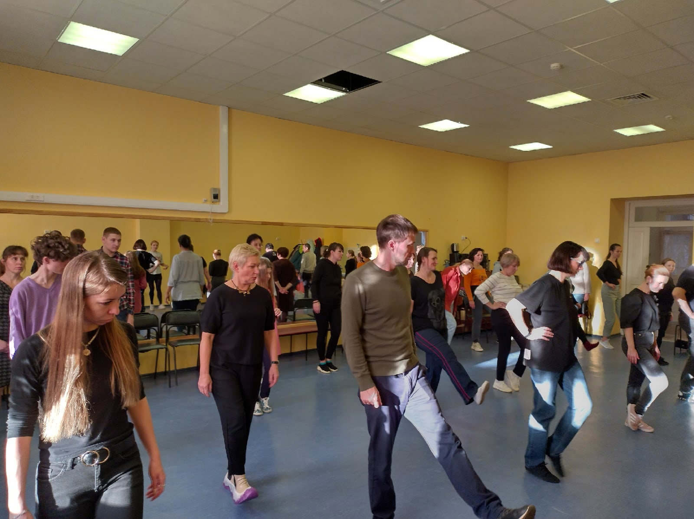
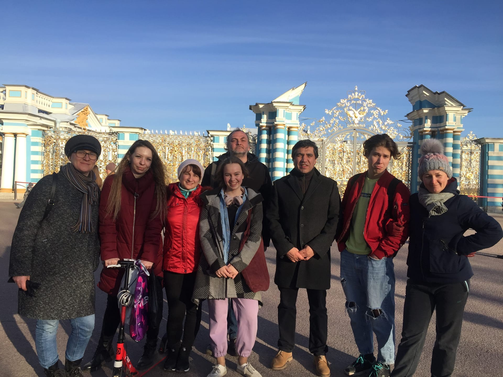
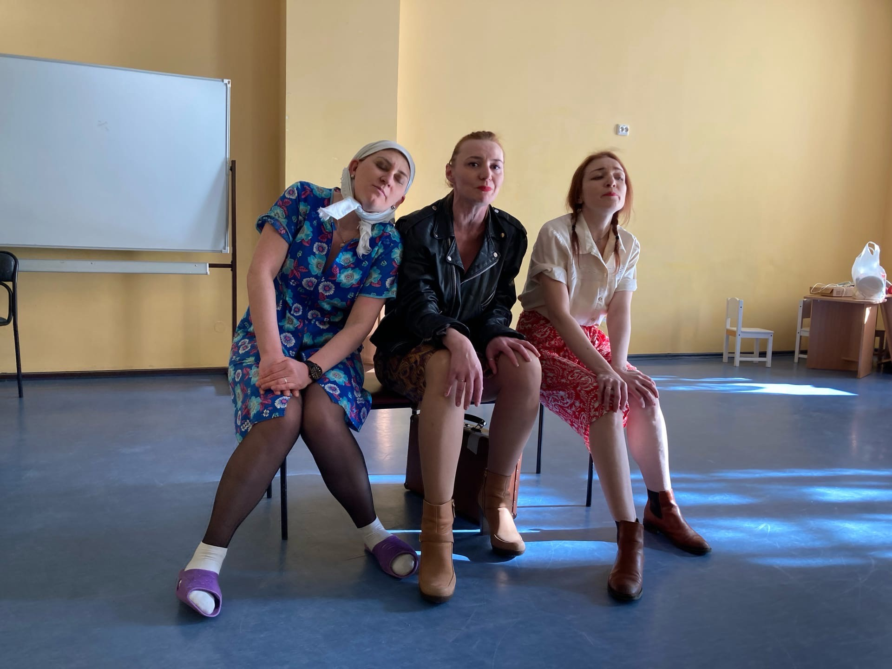

Наш театр - это не только режиссер и актеры, но и наша замечательная Студия, где обучаются актерскому мастерству, а также наши дорогие зрители.
На данный момент, наш основной состав насчитывает в себе более 20 прекрасных и разноплановых актеров разного возраста. Некоторые из которых находятся в театре уже больше 15 лет. Для того, чтобы попасть в основной состав театра, необходимо пройти обучение в Студии. В среднем, это занимает два года: у кого-то больше, у кого-то меньше, но это не значит, что вы не сможете играть в спектаклях раньше: многие ребята-студийцы попадают на сцену уже спустя несколько месяцев обучения.
Главная ценность нашего коллектива - это атмосфера, которая царит на репетициях, спектаклях и внутренних мероприятиях: нашему режиссеру удалось создать по-настоящему "семейный" коллектив, который всегда поддерживает друг друга, относится к друг другу с теплом и заботой и всегда помогает в творческом процессе.
Если вы хотите стать частью нашей театральной семьи: у вас есть два способа.
Первый - вы можете прийти учиться к нам в студию. Каждый сентябрь у нас проходит набор на бесплатное обучение. Для начала вам нужно просто связаться с нами и придти к режиссеру на собеседование.
После - посещать занятия, которые проходят по воскресеньям и направлены на развитие актерского мастерства, сценической речи, сцен. движения и снятие зажимов. Важно понимать - что это не "кружок", а настоящее обучение - как в любом учебном заведении, и мы ждем от вас ответственного и осознанного посещения, выполнения домашних заданий и старания.
Второй способ - это приходить на наши спектакли в качестве зрителей, ведь наши зрители - тоже часть нашей большой семьи и источник вдохновения для всех нас! Нам очень важна ваша поддержка. Поэтому, если вы любите творчество - присоединяйтесь к нам! В качестве учеников или зрителей.